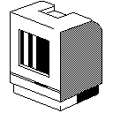

Download
vMac_Retro_Icon.zip (info) zipped files.

Joseph V. Barrile created this replacement icon for Mini vMac in Macintosh OS X. It is too big to be appropriate as the default icon for “Mini” vMac (as any true OS X style icons must be), but this is not a real problem for actual use.
To install this icon into a copy of the Mini vMac application, download vMac_Retro_Icon.zip and expand the archive to get the folder “vMac_Retro_Icon”, which contains the files “AppIcon.icns” and “README.txt”. Control click on the Mini vMac application (or right click with a two button mouse), and from the pop up menu, choose "Show Package Contents". Open the folder "Contents", which among other things contains the folder "Resources". Move the file "AppIcon.icns" into the "Resources" folder, replacing the existing file with the same name.
“Copying/License:
I’m offering this as free software to be used as an
application icon for Paul C. Pratt and his Mini vMac software project
(http://minivmac.sourceforge.net) only and may not be sold or
repackaged in any other manner. Joseph V. Barrile must be identified
as the author of this work.”